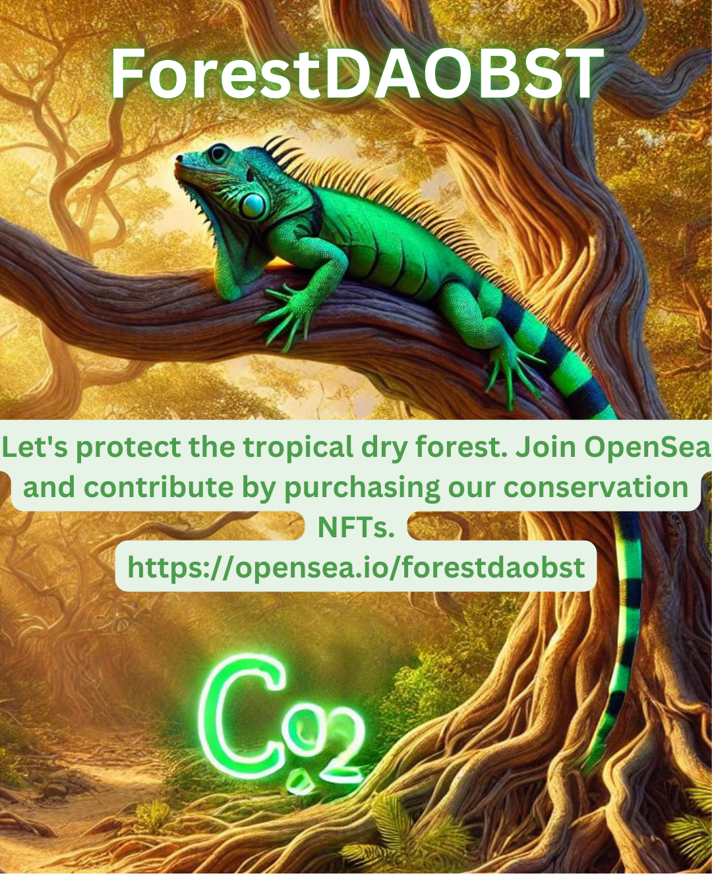

What is ForestDAOBST (BST)?
ForestDAOBST is a decentralized initiative with the goal of acquiring strategic land and protecting the Tropical Dry Forest.
How does it work?
(Decentralized Autonomous Organization) DAO for the Conservation of the Tropical Dry Forest Why is it urgent? The Tropical Dry Forest has lost more than 92% of its original cover in Colombia. Deforestation and the lack of resources for conservation are affecting biodiversity and the climate. Our Solution We will create a decentralized DAO to purchase and protect critical lands. Using blockchain and smart contracts, we provide transparency and security. We monetize with carbon offsets, NFTs, and staking $FORESTBST (BST). Business Model We raise funds with Web3 crowdfunding, NFTs, and tokens. We purchase land and manage restoration projects. The community governs the DAO through token votes, and we monetize through carbon offsets and ecotourism NFTs.
Our NFTs
Purchase an NFT and be part of the conservation of the Tropical Dry Forest. Each purchase directly contributes to land protection and grants you recognition on our DAO page and social media.
Companies and individuals who purchase our NFTs will be recognized as allies in the fight to preserve the environment.
Tokenized Carbon Bonds
To create future bonds, we follow these steps: Solidity smart contract that issues ERC-1155 tokens (allows multiple tokens in a single contract). Each token represents one ton of carbon captured. Carbon Audit: Carbon capture on protected lands is certified. Blockchain Registration: Each bond is issued as an NFT or fungible token that companies can buy, transfer, or sell. Secondary Market: Bonds can be traded on markets like OpenSea or carbon marketplaces.
Visit us on OpenSeaConservation Zones
Roadmap
- Phase 1: Creation of the DAO and issuance of the $FORESTBST (BST) token
- Phase 2: Identification and acquisition of strategic lands
- Phase 3: Development of infrastructure for conservation
- Phase 4: Expansion and new alliances/li>